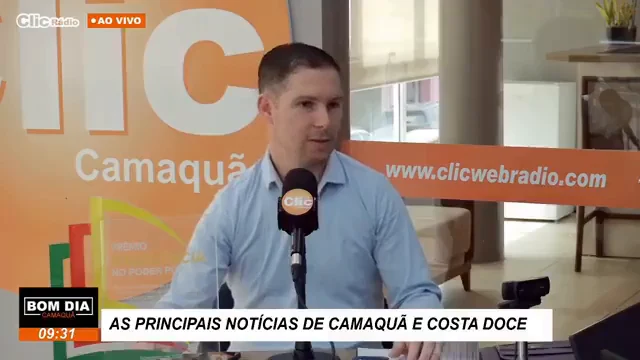

Wagner apresenta o Mandato em Ação em entrevista à Clic Rádio

Na entrevista de 27 de novembro, Wagner Tomaszewski explicou como surgiu o Mandato em Ação e mostrou como os moradores de Cristal poderão registrar solicitações e acompanhar o andamento pelo celular. A reportagem da Clic Camaquã também destaca o reconhecimento do projeto no INLEGIS 2026.
Ler a reportagem na Clic Camaquã ↗
Projeto de vereador de Cristal recebe Prêmio Excelência no Poder Público 2026
O Mandato em Ação, desenvolvido pelo vereador Wagner Tomaszewski para aproximar os cidadãos do mandato, recebeu o Prêmio Excelência no Poder Público 2026, concedido pelo INLEGIS na categoria Boas Práticas no Poder Público. A cerimônia ocorreu em Porto Alegre em 12 de novembro de 2026. O reconhecimento também foi tema de reportagem e entrevista na Cristal Web Rádio, em 16 de novembro.
A reportagem e um resumo em vídeo da entrevista estão no site da emissora.
Ver fotografia da entrevista na Cristal Web Rádio